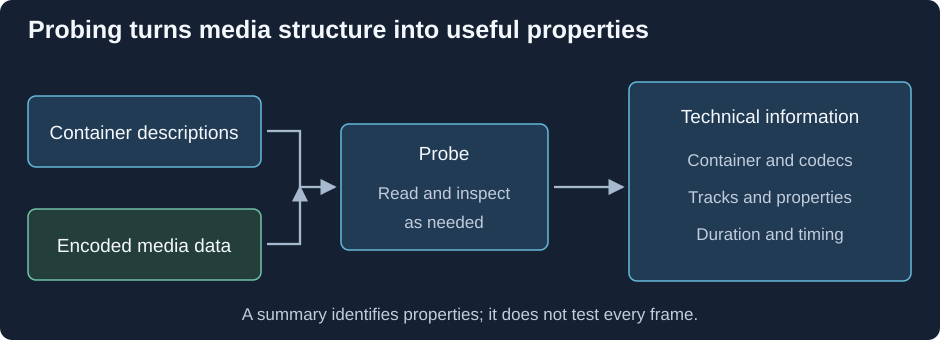

Media Probing
Before a player can choose a decoder, it needs to know what it has received. Probing reads a source's structure and, where necessary, samples some encoded data to identify its streams and properties.
For Emby, that technical information contributes to the media details and playback decisions. It is different from finding posters, episode names, or descriptions for the library.

Conceptual workflow. A particular property can come from a header, direct examination, or an estimate.
A successful probe is not a full integrity check
A report showing codec, resolution, and duration establishes that the tool identified useful information. It does not prove that every frame in a two-hour film can be decoded.
Some properties are explicitly stored. Others are inferred from limited data, or calculated from size and duration. A missing bitrate field does not mean that the stream contains no data; the tool may lack a reliable value to report.
Live or irregular sources can also need more data before all streams appear. Inspection tools expose analysis limits because there is a tradeoff between fast discovery and a fuller examination.
When a report looks suspicious, compare MediaInfo with ffprobe, including the file path, selected tracks, and tool versions. Different field names or estimates do not necessarily indicate file damage.
For a repeatable Emby failure, note whether it happens at startup, on seeking, or at the same scene. That symptom helps decide whether a short probe is enough or whether the relevant part of the media needs a deeper decode check.
See Also
- Media Stream Inspection with MediaInfo
- Media Stream Inspection with ffprobe
- Damaged and Incomplete Media Files